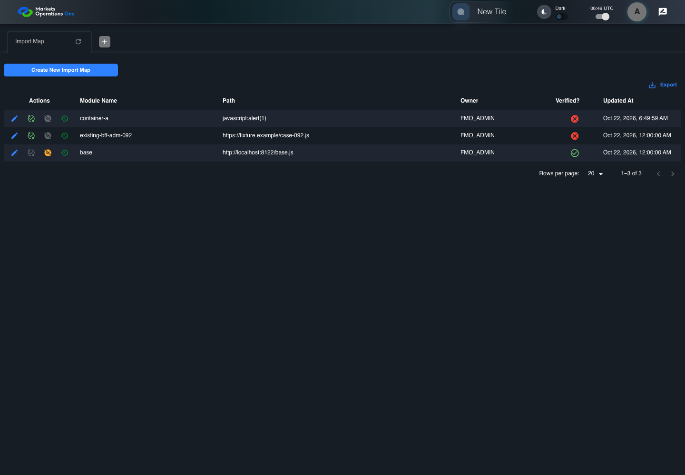

BFF-ADM-092 current BFF administration through actual UI
FAIL · application/run-072/bff-adm-092-current-bff-administration-through-actual-ui-470a9eb8b2a7-attempt-1 · ACTUAL_APPLICATION_LOCAL_SERVICES
Actual current React and exact-current BFF admin controllers/services/JPA with actual migration DDL in disposable PostgreSQL. Controlled OUD/EMS2 identities and local Spring bootstrap. Fixture SQL seeds/mutates isolated records; service errors are actual database errors. Undefined agreed messages remain unresolved acceptance.
2026-10-22T06:49:54.614Z to 2026-10-22T06:50:05.524Z
Assertions and result · Artifact manifest · Exact run inputs and source hashes
Result SHA-256:e907b44d1f3c7c2bbd0e9d2c42616e293a37d864fa45fee6ebdf6c503165da97Retained failure details
[
{
"message": "Error: \u001b[2mexpect(\u001b[22m\u001b[31mlocator\u001b[39m\u001b[2m).\u001b[22mtoBeVisible\u001b[2m(\u001b[22m\u001b[2m)\u001b[22m failed\n\nLocator: locator('[role=\"tabpanel\"]:visible').locator('[role=\"dialog\"]').filter({ has: getByText(/^(?:new|edit|verify|deactivate) ID:/) })\nExpected: visible\nTimeout: 5000ms\nError: element(s) not found\n\nCall log:\n\u001b[2m - Expect \"toBeVisible\" locator('[role=\"tabpanel\"]:visible').locator('[role=\"dialog\"]').filter({ has: getByText(/^(?:new|edit|verify|deactivate) ID:/) }) with timeout 5000ms\u001b[22m\n\u001b[2m - waiting for locator('[role=\"tabpanel\"]:visible').locator('[role=\"dialog\"]').filter({ has: getByText(/^(?:new|edit|verify|deactivate) ID:/) })\u001b[22m\n",
"stack": "Error: \u001b[2mexpect(\u001b[22m\u001b[31mlocator\u001b[39m\u001b[2m).\u001b[22mtoBeVisible\u001b[2m(\u001b[22m\u001b[2m)\u001b[22m failed\n\nLocator: locator('[role=\"tabpanel\"]:visible').locator('[role=\"dialog\"]').filter({ has: getByText(/^(?:new|edit|verify|deactivate) ID:/) })\nExpected: visible\nTimeout: 5000ms\nError: element(s) not found\n\nCall log:\n\u001b[2m - Expect \"toBeVisible\" locator('[role=\"tabpanel\"]:visible').locator('[role=\"dialog\"]').filter({ has: getByText(/^(?:new|edit|verify|deactivate) ID:/) }) with timeout 5000ms\u001b[22m\n\u001b[2m - waiting for locator('[role=\"tabpanel\"]:visible').locator('[role=\"dialog\"]').filter({ has: getByText(/^(?:new|edit|verify|deactivate) ID:/) })\u001b[22m\n\n at /Users/lushevol/code/github/ratan-release-impact/workbench/e2e/audit-specs/bff-admin.spec.ts:43:117\n at AuditCapture.step (/Users/lushevol/code/github/ratan-release-impact/workbench/e2e/support/audit-fixture.ts:94:21)\n at /Users/lushevol/code/github/ratan-release-impact/workbench/e2e/audit-specs/bff-admin.spec.ts:18:27",
"location": {
"file": "/Users/lushevol/code/github/ratan-release-impact/workbench/e2e/audit-specs/bff-admin.spec.ts",
"column": 117,
"line": 43
},
"snippet": " 41 | if(text.startsWith('the next BFF repository save')){await app.fixture('seed',{failure:`${app.resource}-save`});return;}\n 42 | if((match=/^Admin [ABCS] clicks the button labeled \"([^\"]+)\"/.exec(text))){if(match[1].startsWith('Create New')){const nativeNow=Date.now();if(creationClock)await page.clock.setFixedTime(new Date(1700000000000));await app.ui.panel.getByRole('button',{name:match[1],exact:true}).click();if(creationClock)await page.clock.setFixedTime(new Date(nativeNow));}else {const row= /row with \"Record Id\" \"(\\d+)\"/.exec(text)?.[1];if(row){await app.ui.reveal('actions',row);await app.ui.action(match[1],row).click();}else await app.clickFooter(match[1]);}return;}\n> 43 | if((match=/^the dialog titled \"([^\"]+)\" (is visible|remains visible)/.exec(text))){await expect(app.ui.dialog()).toBeVisible();await expect(app.ui.dialog()).toContainText(match[1]);return;}\n | ^\n 44 | if((match=/^Admin [ABCS] fills the (?:textbox|textarea) labeled \"([^\"]+)\" with exactly (\\d+) ASCII \"a\" characters/.exec(text))){await app.fill(match[1],'a'.repeat(Number(match[2])));return;}\n 45 | if((match=/^Admin [ABCS] fills the (?:textbox|textarea) labeled \"([^\"]+)\" with \"(.*)\" in dialog/.exec(text))){await app.fill(match[1],match[2].replaceAll('\\\\\"','\"').replaceAll('\\\\t','\\t'));return;}\n 46 | if((match=/^Admin [ABCS] clicks the combobox labeled \"([^\"]+)\"/.exec(text))){await app.ui.field(match[1],'combobox').click();return;}"
}
]Machine observations
- actual-identity-projection.json
36363fdf848dd969a34e7ae0c66a501b4530fcf57eccb32d66ed486d014374e4 - baseline-inputs.json
82ca4e3d6dd5d442180f1ba49d8a5254575a417094cf41463f14fdb046cc9299 - bff-boundary.json
898a8ba9d9236b86f913bc202dbcfe6928c99b52d81fd17810b8858fbfae37fd - committed-ui-submission-comparisons.json
842706fdff491c5f4d51a7f75657e732c49cd9d8ee1f1afc62c71c58b50b7d2f - creation-clock.json
f96abb05302661a7d355fa6c7a6e0cddb4648b817703f335501799f6b27570ba - fixture-step-4.json
465ab89dfbf1b16e939567f1de66e02a903f9a2585ec264ef0eb1d83ff57727f - fixture-step-5.json
532ace5f3ee7ad7e3731594cf6be832131804896a6810ef80a20df1bb682bf92 - initial-persisted-records.json
4b170f79cfd1e01d2c1b345924716e3b6eb51d7ef1e9bffb7da9e72255375c90 - persisted-after-submit.json
1ceea11d687519208a7cbf43efa693d26c4c1562a70e07ad93717187f17fb50a - ui-origin-bff-requests.json
9bb11ae73ae79d58de41cc1442186b1a4bc32866297613574c3e73b28d23feea
Screenshot capture: CAPTURED. Named frames: 12.
Step screenshot evidence: INCOMPLETE. 11/13 canonical steps have execution screenshots.
Step 12 has no screenshot from an executed step. Step 13 has no screenshot from an executed step.
Canonical step timeline
Given Admin A uses subject "admin-a" with role "FMO_ADMIN" in an isolated authenticated browser
Execution: PASSED.1. step-01 Visible state after step 1: Given Admin A uses subject "admin-a" with role "FMO_ADMIN" in an isolated authenticated browser
2026-10-22T06:49:57.928Z · 1440×1000
Step: /Users/lushevol/code/github/ratan-release-impact/workbench/tasks/ui-test-coverage-20261022/test-cases.md:18607
SHA-256:e9996c7aabe1fa36a6eec21c06d1d7a51d510a4437c1b943b5f385b2e8a05de1And the controlled Import Map fixture records the initial grid rows and persisted values
Execution: PASSED.
2. step-02 Visible state after step 2: And the controlled Import Map fixture records the initial grid rows and persisted values
2026-10-22T06:49:58.090Z · 1440×1000
Step: /Users/lushevol/code/github/ratan-release-impact/workbench/tasks/ui-test-coverage-20261022/test-cases.md:18608
SHA-256:e9996c7aabe1fa36a6eec21c06d1d7a51d510a4437c1b943b5f385b2e8a05de1And the controlled creation clock returns 1700000000000 milliseconds
Execution: PASSED.
3. step-03 Visible state after step 3: And the controlled creation clock returns 1700000000000 milliseconds
2026-10-22T06:49:58.156Z · 1440×1000
Step: /Users/lushevol/code/github/ratan-release-impact/workbench/tasks/ui-test-coverage-20261022/test-cases.md:18609
SHA-256:e9996c7aabe1fa36a6eec21c06d1d7a51d510a4437c1b943b5f385b2e8a05de1And the baseline fixture data defines "Module Name" as "container-092"
Execution: PASSED.
4. step-04 Visible state after step 4: And the baseline fixture data defines "Module Name" as "container-092"
2026-10-22T06:49:58.221Z · 1440×1000
Step: /Users/lushevol/code/github/ratan-release-impact/workbench/tasks/ui-test-coverage-20261022/test-cases.md:18610
SHA-256:e9996c7aabe1fa36a6eec21c06d1d7a51d510a4437c1b943b5f385b2e8a05de1And the baseline fixture data defines "Path" as "https://fixture.example/case-092.js"
Execution: PASSED.
5. step-05 Visible state after step 5: And the baseline fixture data defines "Path" as "https://fixture.example/case-092.js"
2026-10-22T06:49:58.287Z · 1440×1000
Step: /Users/lushevol/code/github/ratan-release-impact/workbench/tasks/ui-test-coverage-20261022/test-cases.md:18611
SHA-256:e9996c7aabe1fa36a6eec21c06d1d7a51d510a4437c1b943b5f385b2e8a05de1When Admin A clicks the button labeled "Create New Import Map" on the Import Map administration page
Execution: PASSED.6. step-06 Visible state after step 6: When Admin A clicks the button labeled "Create New Import Map" on the Import Map administration page
2026-10-22T06:49:58.633Z · 1440×1000
Step: /Users/lushevol/code/github/ratan-release-impact/workbench/tasks/ui-test-coverage-20261022/test-cases.md:18612
SHA-256:ca2572d4b10945520f36d74f204b6686ceb90a84149d1680c08af792b6e67b4aThen the dialog titled "new ID: 1700000000000" is visible on the Import Map administration page
Execution: PASSED.7. step-07 Visible state after step 7: Then the dialog titled "new ID: 1700000000000" is visible on the Import Map administration page
2026-10-22T06:49:58.933Z · 1440×1000
Step: /Users/lushevol/code/github/ratan-release-impact/workbench/tasks/ui-test-coverage-20261022/test-cases.md:18613
SHA-256:810cdc078d508e89d550e440b51fd8a302d89677b9172d1e1062fb990509f791When Admin A fills the textbox labeled "Module Name" with "container-a" in dialog "new ID: 1700000000000"
Execution: PASSED.8. step-08 Visible state after step 8: When Admin A fills the textbox labeled "Module Name" with "container-a" in dialog "new ID: 1700000000000"
2026-10-22T06:49:59.377Z · 1440×1000
Step: /Users/lushevol/code/github/ratan-release-impact/workbench/tasks/ui-test-coverage-20261022/test-cases.md:18614
SHA-256:e98f15336f8f5fb08860b65cefbad58612352b8aebfcdb33dd631125e45e2304And Admin A fills the textbox labeled "Path" with "javascript:alert(1)" in dialog "new ID: 1700000000000"
Execution: PASSED.9. step-09 Visible state after step 9: And Admin A fills the textbox labeled "Path" with "javascript:alert(1)" in dialog "new ID: 1700000000000"
2026-10-22T06:49:59.820Z · 1440×1000
Step: /Users/lushevol/code/github/ratan-release-impact/workbench/tasks/ui-test-coverage-20261022/test-cases.md:18615
SHA-256:0ef22108d5c42bc5e752903c0df5d0db3039be468488b22e75600347f673393aAnd Admin A clicks the button labeled "Create" in dialog "new ID: 1700000000000"
Execution: PASSED.
10. step-10 Visible state after step 10: And Admin A clicks the button labeled "Create" in dialog "new ID: 1700000000000"
2026-10-22T06:50:00.068Z · 1440×1000
Step: /Users/lushevol/code/github/ratan-release-impact/workbench/tasks/ui-test-coverage-20261022/test-cases.md:18616
SHA-256:02dc880c1ce7558abae849cb1d2a9ea68ac4f195134a86f2a85a1f0c824e2125Then the dialog titled "new ID: 1700000000000" remains visible on the Import Map administration page
Execution: FAILED.
11. step-11-failure Visible state when step 11 failed. Later steps did not execute.
2026-10-22T06:50:05.115Z · 1440×1000
Step: /Users/lushevol/code/github/ratan-release-impact/workbench/tasks/ui-test-coverage-20261022/test-cases.md:18617
SHA-256:02dc880c1ce7558abae849cb1d2a9ea68ac4f195134a86f2a85a1f0c824e2125And the alert with severity "error" in the portal snackbar displays the agreed message for a Path validation error
Execution: NOT_EXECUTED.No screenshot is recorded for this step. No executed state is claimed.
And the active-import-map response excludes the submitted unsafe Path
Execution: NOT_EXECUTED.No screenshot is recorded for this step. No executed state is claimed.
Additional named frames

The visible state when the test failed.
2026-10-22T06:50:05.178Z · 1440×1000Step: Test source: /Users/lushevol/code/github/ratan-release-impact/workbench/e2e/audit-specs/bff-admin.spec.ts:11
SHA-256:
02dc880c1ce7558abae849cb1d2a9ea68ac4f195134a86f2a85a1f0c824e2125Screenshots establish visible state only. Assertions and traces support functional claims.